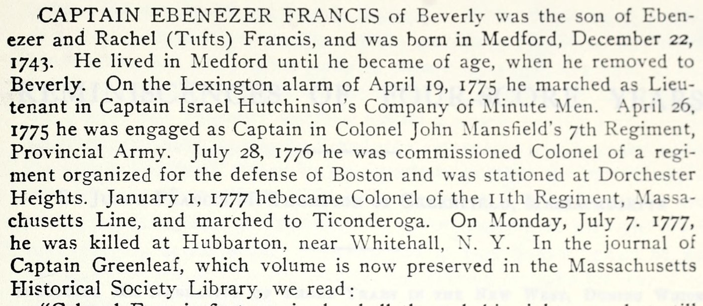
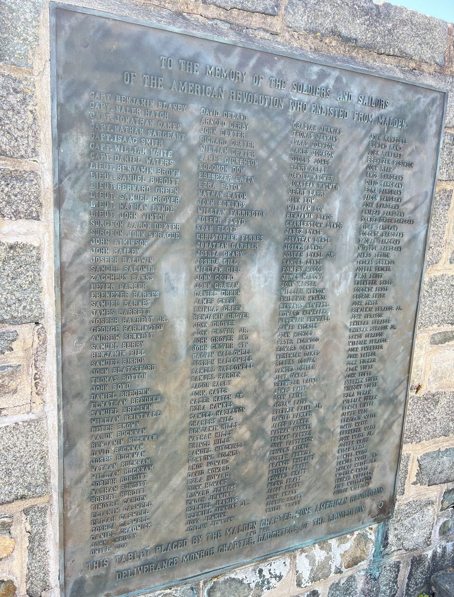

Adam Tufts enlisted from Chelsea in February 1777 for three years in Capt. Moses Greenleaf’s company, Col. Ebenezer Francis’s regiment, which marched to Bennington and the northern army. He was reported dead on April 16, 1778. His family line is not established on this page, and his dates are not confirmed.
Summary drawn from the sources cited on this page.
Biography
Adam Tufts enlisted from Chelsea in February 1777 for three years in Capt. Moses Greenleaf’s company, Col. Ebenezer Francis’s regiment, which marched to Bennington and the northern army. He was reported dead on April 16, 1778.
Colonel Francis’s Tufts Mother
The colonel of Adam Tufts’s 1777 regiment was himself of Tufts descent on his mother’s side:
“Captain Ebenezer Francis of Beverly was the son of Ebenezer and Rachel (Tufts) Francis, and was born in Medford, December 22, 1743.”
The Massachusetts Magazine, vol. 6 (1913), p. 158. Internet Archive

CAPTAIN EBENEZER FRANCIS of Beverly was the son of Ebenezer and Rachel (Tufts) Francis, and was born in Medford, December 22, 1743. He lived in Medford until he became of age, when he removed to Beverly. On the Lexington alarm of April 19, 1775 he marched as Lieutenant in Captain Israel Hutchinson’s Company of Minute Men. April 1775 he was engaged as Captain in Colonel John Mansfield’s 7th Regiment, Provincial Army. July 28, 1776 he was commissioned Colonel of a regiment organized for the defense of Boston and was stationed at Dorchester Heights. January 1, 1777 he became Colonel of the 11th Regiment, Massachusetts Line, and marched to Ticonderoga. On Monday, July 7, 1777, he was killed at Hubbarton, near Whitehall, N. Y. In the journal of Captain Greenleaf, which volume is now preserved in the Massachusetts Historical Society Library, we read :
Transcription of the clipping above: The Massachusetts Magazine, vol. 6 (1913), p. 158. View the page scan
A Chelsea Record of 1749
The Chelsea vital records include a marriage intention of two servants in 1749:
“Adam, servant to Stephen Tufts of Malden, and Priscilla, servant to Samuel Floyd, int. Nov. 29, 1749.”
Vital Records of Chelsea, Massachusetts, to the Year 1850 (1916), p. 440. Internet Archive, printed among the marriages of persons with surnames not given
⚑ Unverified
Whether this Adam is the Adam Tufts of this page is not established; no source seen connects them. In Massachusetts records of the 1740s, “servant” was often used for an enslaved person, and the next entry on the same page records “Bathsheba, slave to Capt. Watts.” The record does not state Adam’s status. Note: Pending further work.
On Malden’s Revolutionary Tablet

Adam Tufts heads the four men of the name on Malden’s bronze tablet to the soldiers and sailors who enlisted from the town. The others are John , Stephen
, Stephen and Timothy
and Timothy .
.
Service Record
Town: Chelsea and Malden · Dates: [dates not confirmed]
“Private, Capt. Moses Greenleaf's co., Col. Benjamin Tupper's regt.; Continental Army pay accounts for service from Feb. 4, 1777, to April 16, 1778; reported died April 16, 1778”
Massachusetts Soldiers and Sailors of the Revolutionary War, vol. XVI (1907), p. 131
Family Connection
Family placement not yet established from a cited source.
Relatives with profiles on this site: Rachel (Tufts) Francis, mother of his colonel; also on the Malden tablet: John Tufts of Malden ; also on the Malden tablet: Stephen Tufts Jr. of Malden
; also on the Malden tablet: Stephen Tufts Jr. of Malden ; also on the Malden tablet: Capt. Timothy Tufts of Malden
; also on the Malden tablet: Capt. Timothy Tufts of Malden .
.
Spouse(s)
Not found in the sources checked (Brooks 1855 Register of Families; Wild; Find a Grave data on file; Tufts Kinsmen Vol. I).
Authoritative IDs / Index Numbers
| Source | ID / status |
|---|---|
| Perseus person index (auth=) | Checked, not found (no auth=tufts,… key for this name in Brooks, the Medford Historical Register or Historic Leaves). |
| Find a Grave memorial | Note: Pending further work. |
| Brooks, History of Medford (1855) register no. | Checked, no entry confidently matched |
| Mass. Soldiers and Sailors | vol. XVI, p. 131 |
| DAR ancestor no. | Note: Pending further work. |
| FamilySearch ID | Note: Pending further work. |
| Geni profile | Note: Pending further work. |
| WikiTree ID | Note: Pending further work. |
| Town / vital records | Medford VRs not yet checked by volume and page |
Only IDs confirmed against dates and family are given as matches. “Not yet checked” means the source has not been searched; “Checked, not found” means it was searched without a match.
⚑ Unverified
His family line. A Malden list also names an Adam Tufts “engaged for town of Malden” (p. 131); whether this is the same man is not confirmed. No link to the main Tufts line is established.
Links and Resources
Every source, record, map, survey, marker and artifact tied to this person, gathered in one place. Page numbers are given where a book is cited.
Maps, Surveys and Artifacts
- — Malden’s tablet to its soldiers and sailors of the Revolution. “To the memory of the soldiers and sailors of the American Revolution who enlisted from Malden,” placed by the Malden Chapter, Sons of th

Digitized Books and Journals
- The Massachusetts Magazine, vol. 6 (1913), p. 158. · Internet Archive
- Vital Records of Chelsea, Massachusetts, to the Year 1850 (1916), p. 440. · Internet Archive
Biographies and Family Trees
Secondary and user-contributed sites; not verified here.
- Family blog post — Blog post with an image of a marriage intention for Adam, “negro” servant of Stephen Tufts of Malden
⚑ Unverified
A marriage intention record (image on a family blog) names Adam as a Negro servant of Stephen Tufts of Malden. The original register and page have not been identified here.